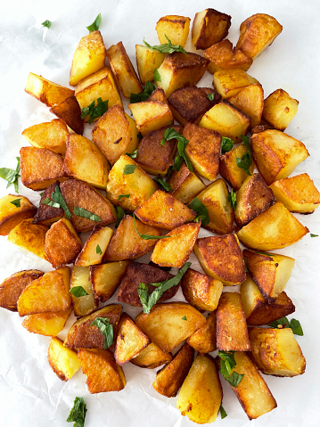

Fried potatoes

Description
Try making these perfectly crispy on the outside and soft inside potatoes.
Ingredients
- potatoes
- olive oil
- garlic
- parsley or thyme
Steps
- Peel potatoes, slice them in cubes and cook them in boiling water for ten minutes.
- Chop garlic and parsley or thyme and fry them in olive oil until garlic becomes crispy and golden.
- Drain potatoes, mix them with olive oil and bake them in the oven preheated to 200 degrees.
- Once finished, mix them with garlic chips, season and serve.